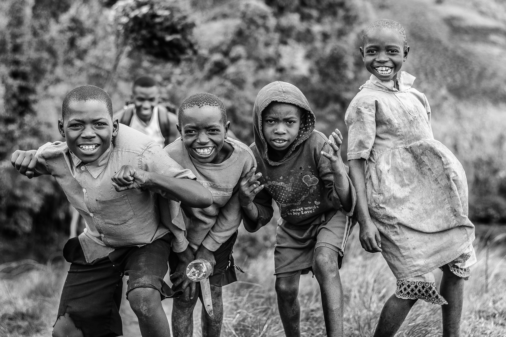
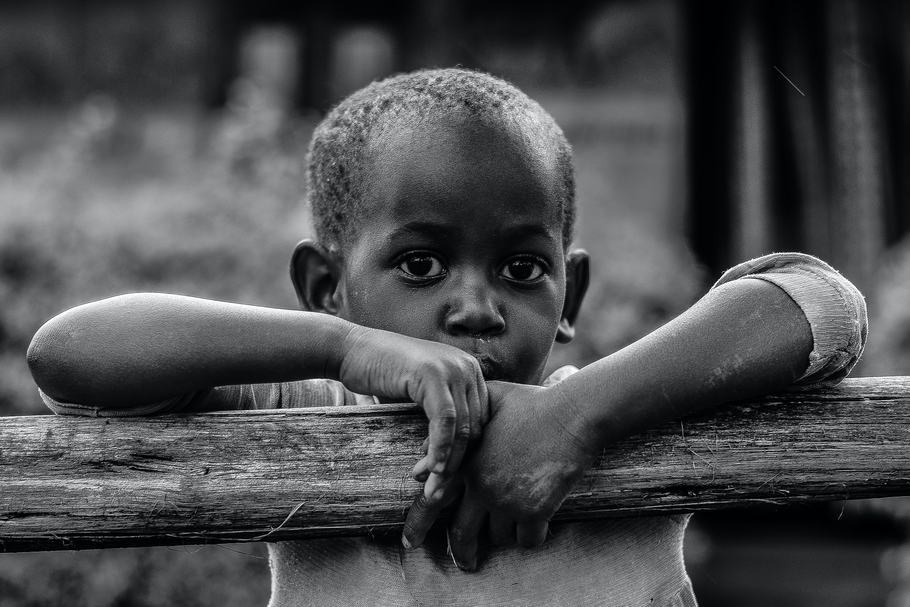

According to the 2018 Nigeria Demographic and Health Survey, Nigeria has 35 million children under the age of five. Out of which, 14 million are stunted, 3 million are wasted and 24 million are anaemic due to poor nutrition. The data also shows that 45 percent of deaths in children under the age of five is caused by malnutrition, and Nigeria loses 15 percent of her GDP annually to the burden. The expert disclosed that more than 70 percent of Nigerian children live in poverty and 23.3 percent live in extreme poverty.
My friends and I have decided to start a Non Governmental Organization to gather donations to help starving children. We have gained some donations from some wealthy individuals such as Aliko Dangote and Wale Adenuga. We are also backed by some of the biggest comapnies in Nigeria. We also have a GoFundMe on our website and every single one of our social media pages where everyone can donate to lend a helping hand in the feeding of these children. We have currently ammassed a sum of N200,000,000 (Two hundred million naira) and we are about to surpass our goal of N250,000,000 (Two hundred and fifty million naira) to be reached by the end of the year. This would be enough to feed about 30,000,000 Nigerian children.